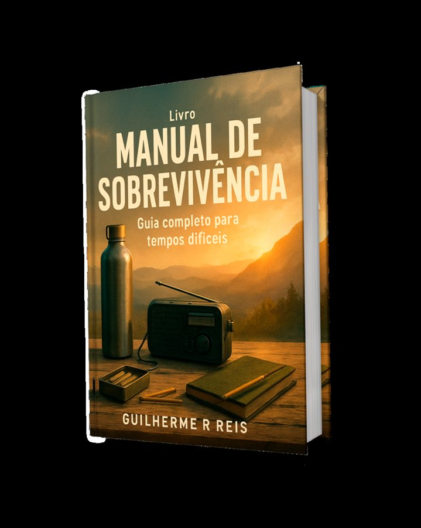

⚠ JAPÃO
Você mora no Japão. Quando o próximo terremoto vier, sua casa está pronta?
No dia 1º de janeiro de 2024, o terremoto de Noto deixou dezenas de milhares de casas sem água e sem luz por semanas. No Japão, a pergunta não é se vai acontecer — é quando. E o guia que você precisa está em português.

Manual de Sobrevivência
O guia completo para tempos difíceis — 500 páginas
- Água, comida, energia, primeiros socorros e comunicação quando tudo falha
- Plano para a família inteira, passo a passo
- Em português, para você e para quem você ama
Escolha o formato
Livro físicoFrete internacional incluído¥8,900
E-book (PDF)Receba na hora, no seu e-mail¥1,980
7 dias de garantia: não gostou, devolvemos seu dinheiro.
Quando Tudo Para
O guia para o apagão e o colapso de abastecimento — 130 páginas
- O que fazer nas primeiras 72 horas sem luz, água e internet
- Lista do que ter em casa antes de precisar
- Direto, prático e em português
Escolha o formato
Livro físicoFrete internacional incluído¥5,400
E-book (PDF)Receba na hora, no seu e-mail¥1,480
7 dias de garantia: não gostou, devolvemos seu dinheiro.
Envio para todo o Japão, 10 a 25 dias úteis, com rastreio.